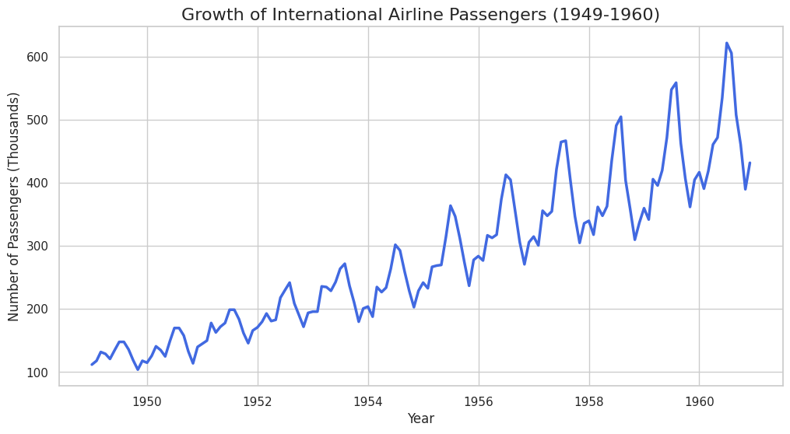
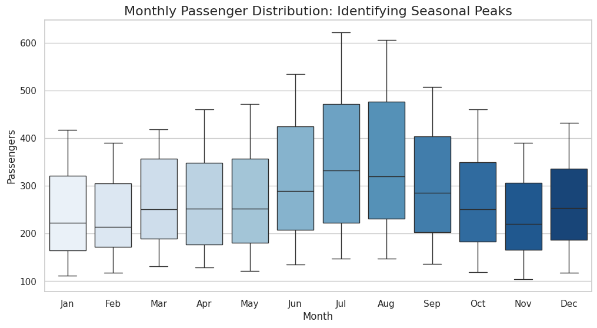

Executive Summary: International Airline Passenger Analysis
A comprehensive review of the "Golden Age of Aviation" (1949–1960), analyzing the shift from luxury travel to a global economic engine.
I. Historical Growth & Market Expansion

Technological Catalyst
The transition from piston-engine aircraft to jet propulsion (The Jet Age) increased flight speeds by 50%, making international travel efficient for business and leisure.
Economic Prosperity
Post-war economic stability led to the rise of the middle class, transforming air travel from an elite status symbol into a standard mode of transport.
II. Seasonal Volatility & Resource Planning

The Summer Surplus
The predictable spike in July and August coincides with the establishment of Western school holidays, which still dictates airline revenue cycles today.
Operational Maintenance
Airlines strategically use the November/February "troughs" for major aircraft overhauls to ensure 100% fleet availability during peak summer demand.
III. Quantitative Data Sample
| Fiscal Month | Passengers (Thousands) |
|---|---|
| 1949-01 | 112 |
| 1949-02 | 118 |
| 19 |